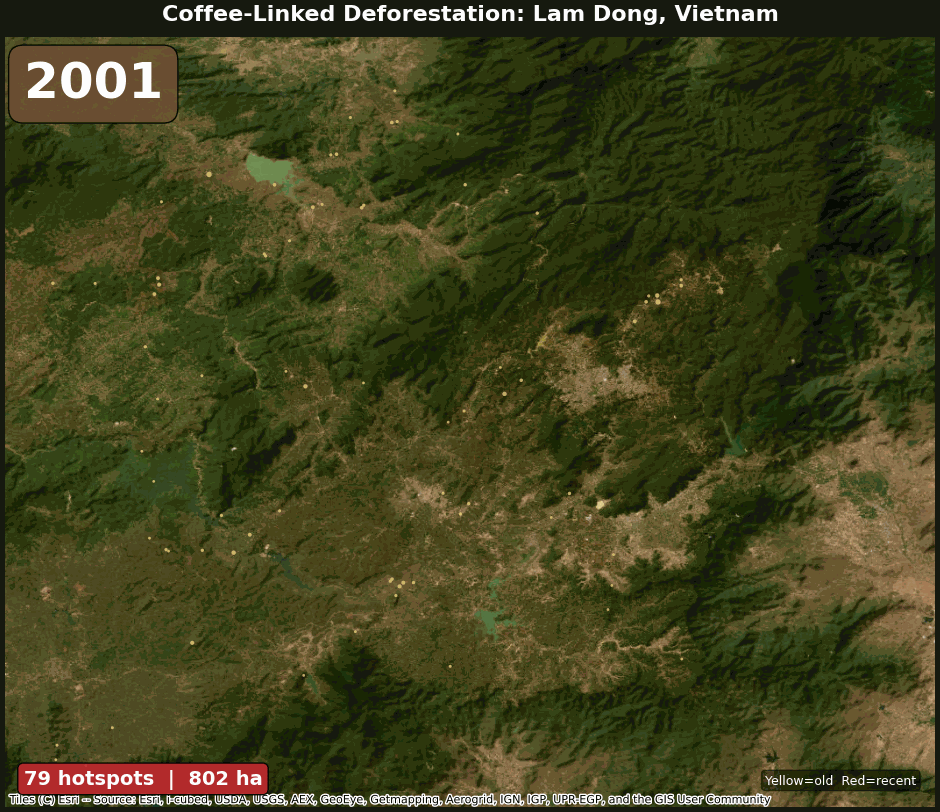

Satellite-based detection of coffee-driven forest loss across three continents, with ML classification and automated reporting.
Source Code View Full Report
Coffee-linked deforestation hotspots accumulating in Vietnam's Central Highlands (2001–2024). Yellow = older, red = recent.
Coffee is a major driver of tropical deforestation, but quantifying how much forest loss is coffee-driven requires combining multiple satellite datasets. This system intersects Hansen forest loss records (2001–2024) with FDP coffee probability maps to identify hotspots, then attributes all deforestation by replacement land cover — not just coffee.
| Region | Forest Loss | Coffee % | Hotspots | ML F1 |
|---|---|---|---|---|
| Lam Dong, Vietnam | 156,680 ha | 49% | 5,000 | 0.491 |
| Huila, Colombia | 72,313 ha | 55% | 5,000 | 0.483 |
| Sul de Minas, Brazil (control) | 94,227 ha | 32% | 5,000 | 0.625 |
Coffee dominates loss in Vietnam (49%) and Colombia (55%) but not in the Brazilian control (32%). Cross-AOI ML generalisation is weak (F1 0.48–0.63) — coffee looks spectrally different across regions.
Zoomable maps with year slider (2001–2024). Toggle satellite basemap. Click hotspots for details.
Vietnam Colombia BrazilGitHub Repository · 211 tests · 69% coverage · Python 3.12 · GEE · scikit-learn · Anthropic Claude